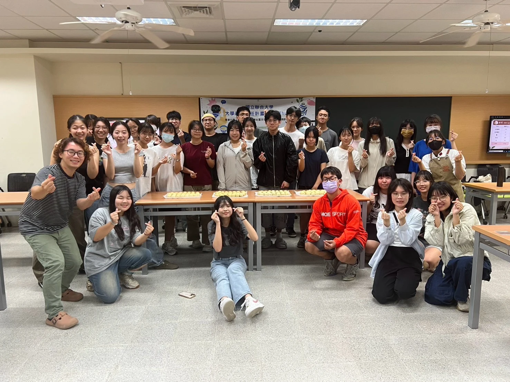
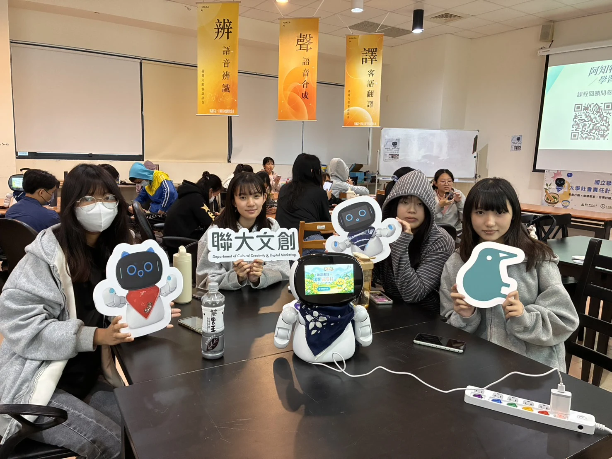
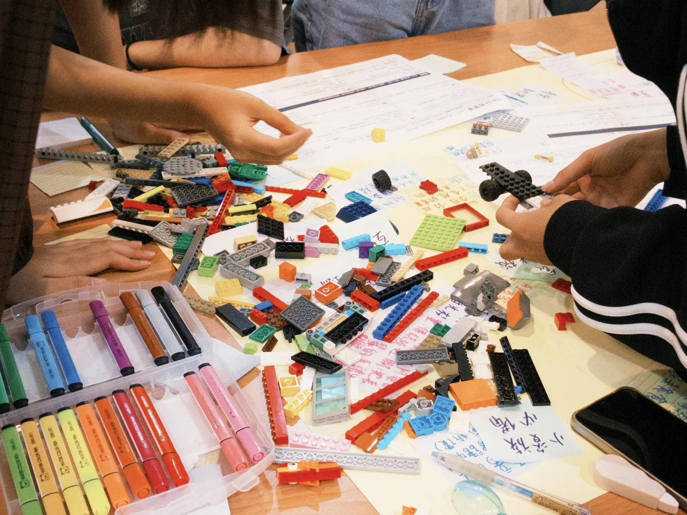
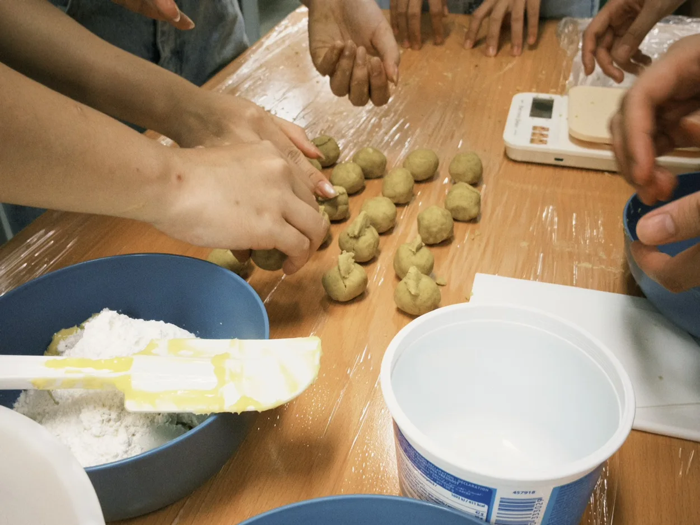
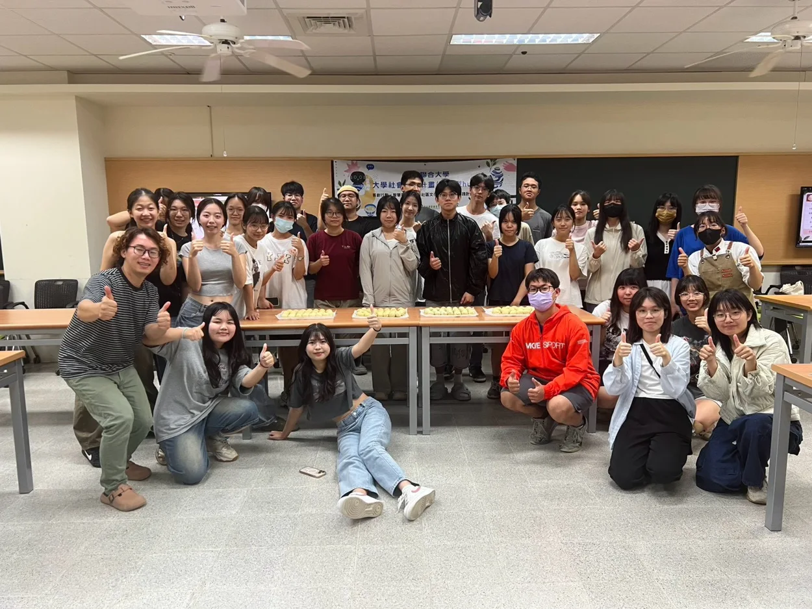
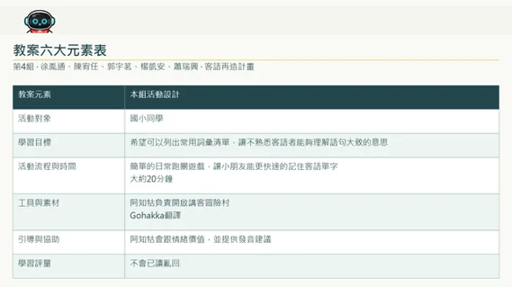
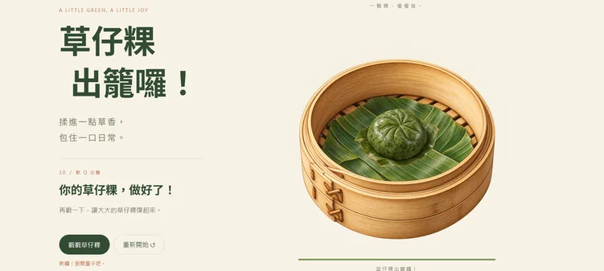

不只是社團，更是一場青年文化行動。
本計畫以「社群培力、科技導入、在地實踐」為核心，規劃客家傳統飲食文化體驗、AI 客庄智慧共創工作坊、地方創生系列等三大類特色課程。
透過文化知識分享、手作體驗、客語 AI 應用與地方交流，引導學生認識客家傳統文化及其創新應用。同時，由社團幹部參與講師媒合、課程規劃與活動執行，培養自主企劃及團隊協作能力，並逐步將校內學習成果延伸至地方實踐，深化青年對客家文化的認同與參與。
計畫課程五大特色
- 01
學生自主籌辦，強化社團培力
由 5 位社團幹部參與講師媒合、課程設計、活動宣傳、行政協調及現場執行，培養學生自主企劃及組織管理能力。
- 02
傳統文化結合青年創意
以擂茶、草仔粿等客家飲食文化為素材，結合節慶元素及創意製作，讓傳統文化以更生活化、具趣味性的形式呈現。
- 03
導入客語 AI，推動文化科技跨域應用
整合智慧客家實驗室的客語 AI 工具及實體機器人「阿知牯」，引導學生將文化知識轉化為創意提案、互動體驗及兒童學習教案。
- 04
從校內共創延伸至地方實踐
結合文化議題探索與 AI 教案共創，預定於 12 月底將學生設計的客語互動教案導入地方幼兒園，延伸文化學習至實際教育場域。
- 05
結合數位平台，擴大文化推廣
運用客家創新創業社建置網站、社群圖文及短影音分享活動與學習成果，累積可持續傳播及延伸應用的文化內容。
這學期，我們一起創造的故事。
從親手製作，到數位互動。

把客語帶進遊戲闖關
學員為國小學童設計約 20 分鐘的互動教案，並設計 8 分鐘試教片段。孩子透過阿知牯與 Gohakka 練習詞彙、接受即時語言回饋，再用學過的客語挑戰下一關。
把料理桌搬上螢幕
本計畫建置「客家創新創業社」專屬網站，整合社團介紹、活動紀錄、文化推廣及數位互動體驗等功能，並設置「生活體驗室」，將課程中學習到的客家飲食文化轉化為線上互動遊戲。
透過擂茶、粢粑等客家料理的模擬製作，讓使用者在線上體驗食材調配、研磨、搓揉等製作過程，以遊戲化方式認識傳統飲食文化。結合實體手作課程與數位互動學習，突破時間與場域限制，提升客家文化的趣味性、可近性及數位傳播效益。
進入生活體驗室 ↗